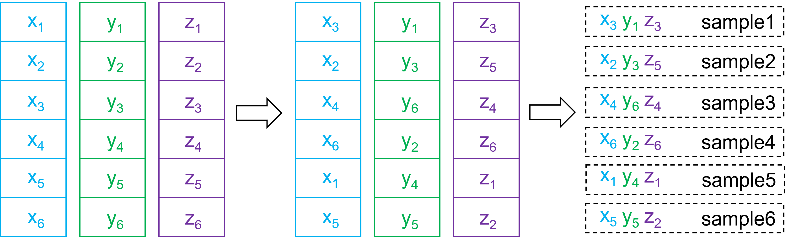

Latin Hypercube Sampling
Latin hypercube sampling is one type of space-filling sampling method. It is often used to draw input points for emulator training. The following figure gives a three-dimensional example.
{kind=link}
Three random variables \(X\), \(Y\), and \(Z\) consist of a three-dimensional space. If we want to draw \(6\) samples from this space using Latin hypercube sampling, we first divide the range of each variable into \(6\) equally probable intervals as shown on the left. In each interval, we pick a value for the corresponding variable. Then we shuffle the picked values of each variable (e.g. \(x_1\) to \(x_6\)) as shown in the middle. Last, each combination gives us one sample of the three variables as shown on the right. It should be noted that each sample excludes any other samples from the intervals that it locates in. This can be straightforwardly extended to draw \(M\) samples from \(N\)-dimensional space consisting of \(N\) random variables.
LHS Class
The LHS class is imported by:
from psimpy.sampler.latin import LHS
Methods
- class LHS(ndim, bounds=None, seed=None, criterion='random', iteration=None)[source]
Latin hypercube sampling.
- Parameters:
ndim (int) – Dimension of parameters.
bounds (numpy array) – Upper and lower boundaries of each parameter. Shape
(ndim, 2). bounds[:, 0] corresponds to lower boundaries of each parameter and bounds[:, 1] to upper boundaries of each parameter.seed (int, optional) – Seed to initialize the pseudo-random number generator.
criterion (str, optional) – Criterion for generating Latin hypercube samples. ‘random’ - randomly locate samples in each bin. ‘center’ - locate samples in bin centers. ‘maximin’ - locate samples in each bin by maximizing their minimum distance. Default is ‘random’.
iteration (int, optional) – Number of iterations if
criterion='maximin'.
Warning
The LHS class considers each random variable being uniformly
distributed in its range. If this is not the case, one needs to transform picked
samples accordingly.